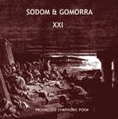

Home Artist links Label link

Al-Bird - Sodom & Gomorra XXI
| Artist: | Al-Bird |
| Title: | Sodom & Gomorra XXI |
| Label: | Musea FGBG4435 |
| Length(s): | 50 minutes |
| Year(s) of release: | 2002 |
| Month of review: | [01/2003] |
Line up
Albert (Al-Bird) Khalmurzayev - keyboards, guitars, harp, vocalizations, programming, sampling
Vitaly "Progressor" Menshikov - bass, guitars
Val "Ptero" Vorobiov - electronic drums, additional keyboard
Flora Shamsutdinova - vicalizations
Vera Vladimirova - whispers
Tracks
| 1) | Sodom & Gomorra XXI | 49.55
|
Summary
Sodom And Gomorra XXI is a concept album in 4 acts (referred to as a progressive symphonic poem), with in total twenty parts. Unfortunately they're exactly one track on the disc, despite the fact that sections are discernable clear enough during the first part. Al-Bird (Albert Khalmurzayev) is one of the members of Ukranian outfit X Religion.
The music
This album is mostly instrumental, and contains a lot of different atmospheres. As far as that is concerned, it does quite well in "telling a story". Having said that, the initial sections still sound like their interrelation is not much stronger than that between those on a regular album. As the album progresses, they tend to merge into a whole.
Conclusion
On repeated listens this album reveals to be more than it originally seemed to me. Having said that, calling this a symphonic poem is a little over the top, as far as I'm concerned. Most stuff on this album is of a pretty much electronic nature, with the occasional guitar, and whispering, shouting, sampling and huffing & puffing. Al-Bird does manage to build up a nice bit of tension every once in a while, especially in the last minutes, or so, making this album pretty worthwhile, still.
© Roberto Lambooy